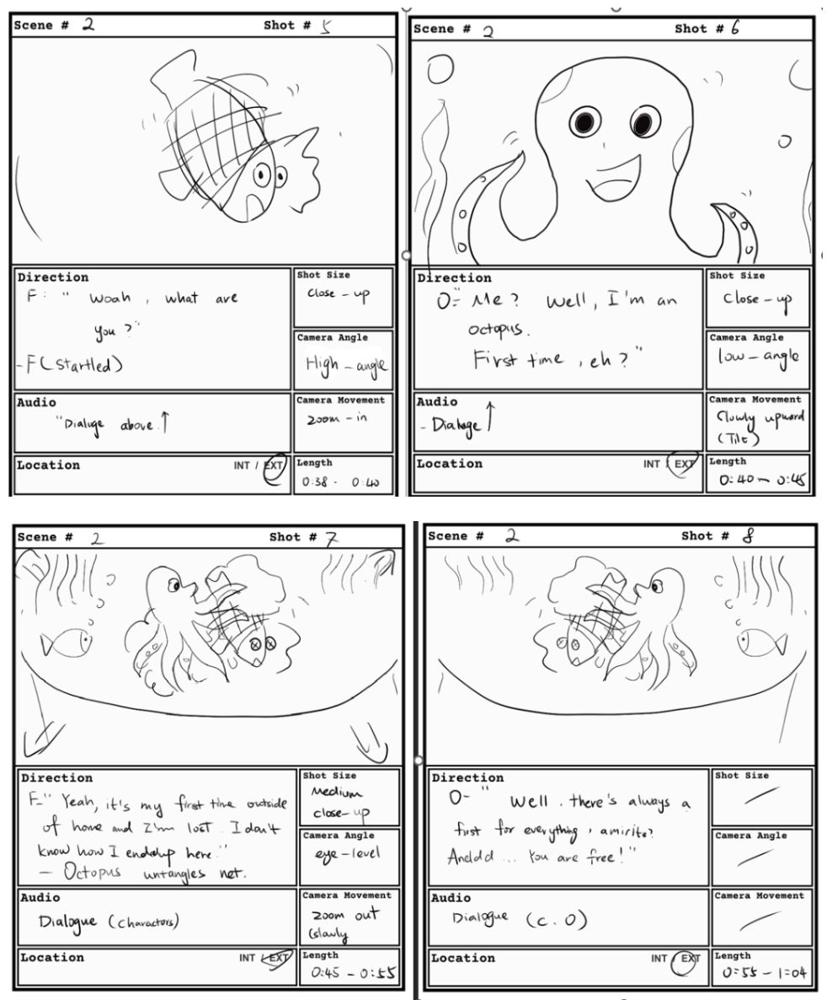

Research & Concept
In my SFU IAT 343 Animation course, our group chose to create a short animated film titled “Adventure of a Fish in the Big Ocean”. We began by collaboratively designing the main characters — a curious tropical fish as the protagonist, along with supporting sea creatures such as an octopus and a sea turtle. After finalizing the character designs, we developed a detailed storyboard to organize each scene, define camera angles, timing, and narrative flow.
- Studied real fish anatomy and underwater reference footage for realistic locomotion
- Analyzed S-curve spine motion and caudal fin lead in swimming cycles
- Created frame-by-frame storyboard to establish story sequence and pacing

Modeling & Rigging
For our group project, I was responsible for modeling and rigging the main fish character. Starting from scratch, I learned modeling techniques through YouTube tutorials and built a clean low-poly fish body in Maya. I then created a joint chain along the spine and into the fins to enable realistic swimming motion. I also studied fish swimming references on YouTube to accurately animate the tail and body wave, making the movement feel natural and lifelike in the ocean environment.
- Self-taught low-poly modeling techniques via YouTube tutorials
- Focused on realistic tail undulation and S-curve body movement based on ocean reference footage
- Careful skin weighting and weight painting for smooth, organic deformation
Model Overlapping & Complex Octopus
"I had a problem with too many models overlapping each other when I copy and paste them into my Maya file or scene. This makes Maya run slower, and sometimes it crashes while I am working, causing me to lose my files. A second problem is that some models, like the octopus, are very complex and not rigged, making them difficult for us to rig."
- Model overlapping and scene lag when copying assets in Maya
- Complex octopus geometry proved extremely difficult to rig

Save File & Manually
Through persistent iteration, I resolved both the animation and technical issues. To fix the scene performance problems, I started saving the file more frequently and avoided copying large numbers of models at once. For the complex octopus, I separated each tentacle, rigged them individually by hand, and successfully integrated them into the scene. These adjustments, combined with refined animation curves, secondary motion, and underwater effects, resulted in a smooth 8-second seamless animation loop.
- Frequent saving and careful asset management eliminated overlapping and crashes
- Manually separated and rigged each octopus tentacle individually

Brainstorming Ideas & Analysis
For my individual project in SFU IAT 233, I was tasked with designing a public pavilion for a park. My initial concept featured a two-level structure to provide elevated viewing platforms, allowing visitors to enjoy high vantage points and take photos. I began with thorough site analysis, studying sun angles throughout the day, prevailing wind directions, and pedestrian circulation patterns to ensure the pavilion would be both functional and inviting.
- Conducted sun-angle analysis for morning, noon, and afternoon
- Performed wind rose studies for natural ventilation
- Designed two-level structure for elevated viewing and photography opportunities
- Gathered user needs focusing on shelter, openness, and visual experience

Parametric Modeling in Rhino 8
In the design development phase, I worked extensively in Rhino 8. I started by drawing precise top-view layouts to determine optimal placement of structural elements, seating areas, windows, and stairs. Using parametric modeling, I was able to quickly test different configurations of roof curvature and louver angles without rebuilding the model from scratch. This approach allowed me to efficiently explore how the structure, circulation, and user experience worked together.
- Created detailed top-view plans to position structure, seats, windows, and stairs
- Built a fully parametric model for rapid iteration of roof curvature and louver angles (15°–60° tested)
- Linked design parameters to structural considerations and spatial flow
- Explored multiple material options including wood, steel, and glass

Shelter vs. Openness Tension
The project hit major friction when balancing the core design brief with my technical limitations in Rhino 8. Striking a balance between full shelter and open views proved incredibly difficult, a challenge made harder by my steep learning curve with parametric software. Translating complex architectural logic into stable, digital geometry resulted in frequent modeling errors and structural oversights before I shifted to physical testing.
- Faced difficulties calculating realistic load-bearing support points for the heavy, elevated two-level platform.
- Struggled to utilize advanced parametric tools

Physical Prototype & Final Design
To resolve my Rhino 8 limitations, I utilized online YouTube architectural tutorials to master parametric modeling commands, which allowed me to properly construct the louver angles and fix my broken geometry. Secondly, To fix the structural load-bearing issues of the elevated two-level platform, I implemented a continuous load path by establishing a unified vertical column grid and horizontal beam framing system.
- Leveraged YouTube software guides to overcome Rhino 8 roadblocks
- Established a clean column grid and primary beam framework underneath the platform to create a realistic, continuous load path.
- Validated digitally and confirmed optimal by the physical lighting test to balance shelter and openness.